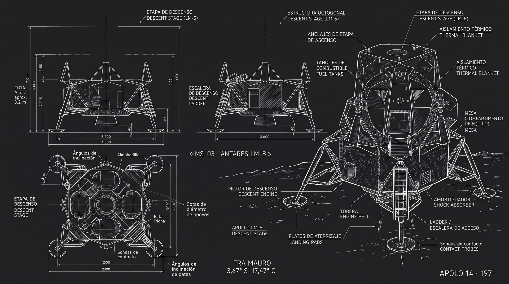

Etapa de descenso del Antares

La mitad de abajo del módulo lunar del Apolo 14, posada en las colinas de Fra Mauro en febrero de 1971. La misión iba a buscar roca que pudiera venir del impacto que formó el Mare Imbrium.
Etapa de descenso del LM-8, posada en Fra Mauro el 5 de febrero de 1971. Abandonada in situ. Personas: Alan Shepard, Ed Mitchell
Lo que hizo
- Fra Mauro no era plano — Me posé en una región de colinas, más difícil que los mares lisos del Apolo 11 y el 12. Shepard tuvo que corregir la trayectoria a mano cuando el radar no le daba lo que esperaba.
- Buscábamos la roca de Imbrium — El encargo era traer material expulsado por el impacto que excavó el Mare Imbrium. Shepard y Mitchell recogieron muestras y perforaron el suelo para sacar un testigo de profundidad.
- Lo que quedó aquí — Mis dos paquetes de experimentos se quedaron funcionando en la superficie, y yo con ellos. Mi mitad de arriba regresó con la tripulación y después terminó estrellándose contra la Luna.
Modelo 3D, chat y cómic, en tres idiomas
Fuentes
Ver el índice completo · Proyecto del NASA Space Apps Challenge 2026. Contenido con fuentes citadas.